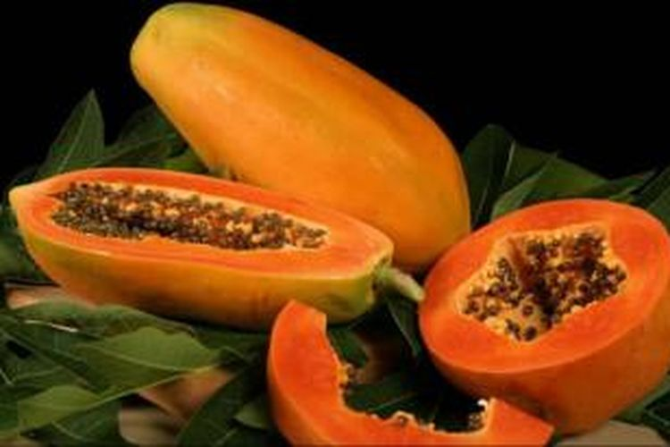
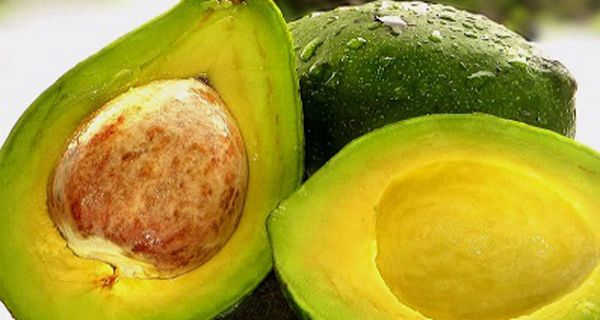
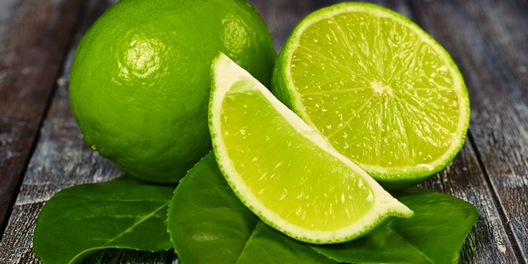
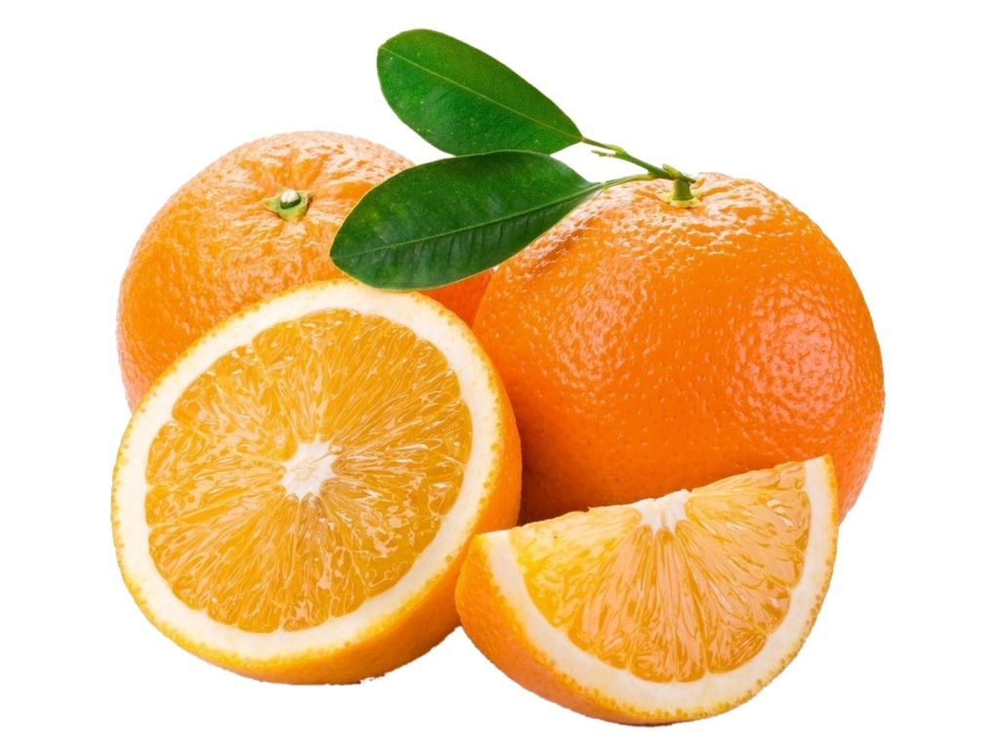

Pepaya
Rp. 6000/Kg
Morfologi Tanaman
Pepaya adalah buah berair berwarna oranye, yang tidak hanya harum dan lezat tetapi juga
sangat
sehat. Sudah terkenal selama ratusan tahun dan pernah disebut “buah para malaikat” oleh
Christopher Columbus.
Pepaya adalah sumber alami vitamin dan mineral yang penting untuk fungsi normal tubuh. Buah
ini
terkenal karena rasanya yang enak dan dapat dimakan tanpa melalui olahan lebih lanjut,
smoothie,
milkshake, atau sebagai sayuran dalam berbagai resep.
Lateks yang berasal dari buah pepaya mentah digunakan sebagai pelunak daging dan pembuatan
beberapa produk kosmetik, kulit dan kecantikan, serta permen kunyah tertentu.
Pepaya kaya nutrisi antioksidan seperti karoten, flavonoid, dan vitamin C, serta vitamin B
(asam
folat dan pantotenat). Buah Pepaya juga merupakan sumber serat dan mineral seperti
magnesium.
Nutrisi ini membantu meningkatkan kesehatan kardiovaskular dan melindungi terhadap kanker
usus
besar.

Alpokat
Rp. 7000/Kg
Dalam kali ini saya akan memberikan sebuah Artikel yang berisi tentang buah Apokat (KBBI:
Avokad), alpukat, atau Persea americana ialah tumbuhan penghasil buah meja dengan nama sama.
Tumbuhan ini berasal dari Meksiko dan Amerika Tengah dan kini banyak dibudidayakan di Amerika
Selatan dan Amerika Tengah sebagai tanaman perkebunan monokultur dan sebagai tanaman pekarangan
di daerah-daerah tropika lainnya di dunia.
Pohon, dengan batang mencapai tinggi 20 m dengan daun sepanjang 12 hingga 25 cm. Bunganya
tersembunyi dengan warna hijau kekuningan dan ukuran 5 hingga 10 milimeter. Ukurannya bervariasi
dari 7 hingga 20 sentimeter, dengan massa 100 hingga 1000 gram; biji yang besar, 5 hingga 6,4
sentimeter.
Buahnya bertipe buni, memiliki kulit lembut tak rata berwarna hijau tua hingga ungu kecoklatan,
tergantung pada varietasnya. Daging buah apokat berwarna hijau muda dekat kulit dan kuning muda
dekat biji, dengan tekstur lembut.
Jeruk
Jeruk adalah buah yang memiliki bentuk yang bulat dan kulit yang berwarna
oranye. Aroma yang khas dikeluarkan oleh jeruk pun sangat kuat sehingga kita dapat dengan
mudah menebak buah jeruk tanpa harus melihatnya hanya dengan mencium aromanya. Buah jeruk
ini memiliki berbagai macam jenis ukuran yaitu, kecil, sedang, hingga besar. Jeruk ini
memiliki rasa yang asam namun ada juga yang manis. Jeruk ini memiliki kadar air yang cukup
banyak pada bulir-bulirnya. Saat Anda menikmati jeruk, akan terasa bulir-bulir jeruk yang
pecah dan menghasilkan air yang cukup banyak. Memakan jeruk juga dapat untuk menghilangkan
rasa haus.
Manfaat buah jeruk bagi kesehatan tubuh Buah Jeruk digemari oleh masyarakat. Ketika kita
sariawan, orang akan teringat buah jeruk, karena jeruk dapat menyembuhkan penyakit sariawan.
Sebenarnya ada banyak khasiat buah jeruk selain kemampuannya dalam menyembuhkan penyakit
sariawan.
Jenis jeruk yang dijual diantaranya :

Jeruk Nipis
Rp. 8000/Kg
Jeruk Nipis (Lat Citrus aurantifolia; Famili: Rutaceae) merupakan jenis
tumbuhan yang masuk kedalam suku jeruk-jerukan, tersebar di Asia Dan Amerika Tengah dikenal
juga sebagai jeruk pecel. Pohon jeruk nipis dapat mencapai tinggi 3-6 meter, bercabang
banyak dan berduri, daun lonjong, tangkai daun bersayap kecil. Perbungaan muncul dari ketiak
daun dan bunga kecil, putih berbau harum. Buah bulat sampai bulat telur, berwarna hijau
sampai kuning dan kulit buah tipis mengandung banyak minyak atsiri. Daging buah berwarna
putih
kehijauan, sangat asam, mengandung banyak vitamin C dan asam sitrat. Biji banyak, kecil,
bersifat poliembrioni. Di Indonesia dapat hidup di dataran rendah sampai ketinggian 1000 m
dari permukaan laut.
Tumbuh baik di tanah alkali, di tempat-tempat yang terkena sinar
matahari langsung. Perbanyakan dengan biji, okulasi atau cangkok. Buah digunakan untuk
membuat minuman, obat batuk dan penyedap masakan dan juga sering dipakai untuk menghilangkan
karatan dan mencuci rambut.

Jeruk Mandarin
Rp. 7000/Kg
Morfologi tumbuhan
Tumbuhan ini merupakan jenis pohon dengan tinggi 2-8 meter. Tangkai daun bersayap sangat
sempit sampai boleh dikatakan tidak bersayap, panjang 0,5-1,5 cm. Helaian daun berbentuk
bulat telur memanjang, elliptis atau berbentuk lanset dengan ujung tumpul, melekuk ke
dalam
sedikit, tepinya bergerigi beringgit sangat lemah dengan panjang 3,5-8 cm. Bunganya
mempunyai diameter 1,5-2,5 cm, berkelamin dua daun mahkotanya putih. Buahnya berbentuk
bola
tertekan dengan panjang 5-8 cm, tebal kulitnya 0,2-0,3 cm dan daging buahnya berwarna
oranye. Rantingnya tidak berduri dan tangkai daunnya selebar 1-1,5 mm (Van Steenis,
1975).